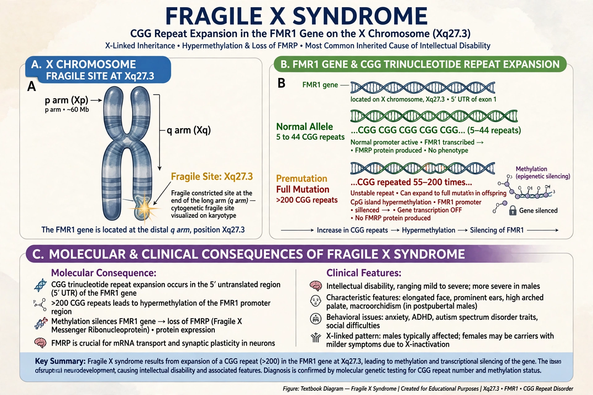

Fragile X syndrome (FXS) is a genetic neurodevelopmental disorder caused by expansion of a CGG repeat (>200 repeats) in the FMR1 gene on the X chromosome, silencing production of FMRP protein. It is the most common inherited cause of intellectual disability.

Developmental delay, learning disability, anxiety, hyperactivity, autistic behaviours, long narrow face, large ears, macroorchidism after puberty. Premutation carriers (55–200 repeats) risk fragile X-associated tremor/ataxia syndrome (FXTAS) and primary ovarian insufficiency.
DNA testing for CGG repeat number. No cure; early intervention, speech and occupational therapy, and medication for symptoms. See X-linked dominant.